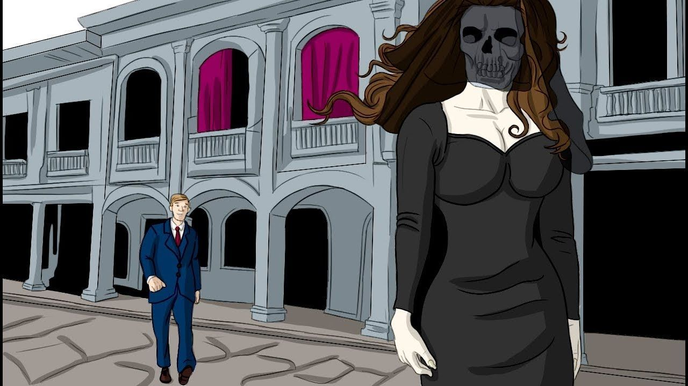

LA DAMA TAPADA
Información
Este relato cuenta que en Ecuador en la ciudad de Guayaquil aparece de vez en cuando una joven delgada a quien nadie ha visto su rostro, ya que lleva cubierto con un velo, sin embargo otros afirman que esta leyenda urbana no se conoce su origen, pero podemos decir que estas historias son contadas en las principales ciudades del país por los años de 1700.
Desarrollo de la historia
La dama tapada luce de manera muy elegante y esbelta además porta una sombrilla. Los pobladores dicen que cuando está cerca de algún hombre, el espíritu comienza a emanar una fragancia muy agradable, a fin de que la víctima se cautive con su aroma y la siga a donde quiera que vaya. La persona seducida por el perfume la sigue sin saber a dónde se dirige. De esa forma, la dama tapada lo va apartando a una zona solitaria donde el individuo no pueda pedir ayuda. Derrepente, la mujer se detiene en medio del camino, se coloca frente de él y al descubrir su rostro, el hombre queda aterrorizado por su al mirar aspecto de su terrrífico rostro de cadáver. Enseguida el agradable perfume se convierte en un olor totalmente desagradable y nauseabundo de carne podrida, enseguida la víctima queda afectado con todo estos horrores que no le permiten moverse y fallece de la impresión. Pocos que han logrado sobrevivir continuando su vida de manera normal superando el encuentro con este ser macabro y se ha quedado en su memoria para poder contar su historia. Peroo otros que huyeron no corrieron con la misma suerte su salud mental se vio afectada teniendo que ser hospitalizados para superar el trauma que les había provocado éste encuentro con el espectro.
Referencias
Localización
Mas Leyendas
La caja ronca

La leyenda de Cantuña